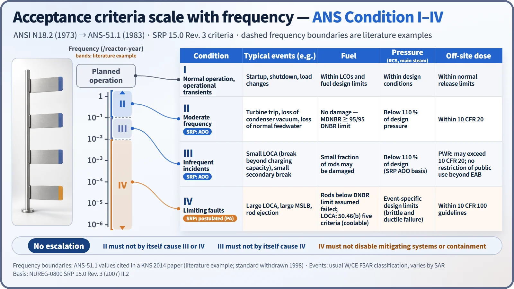
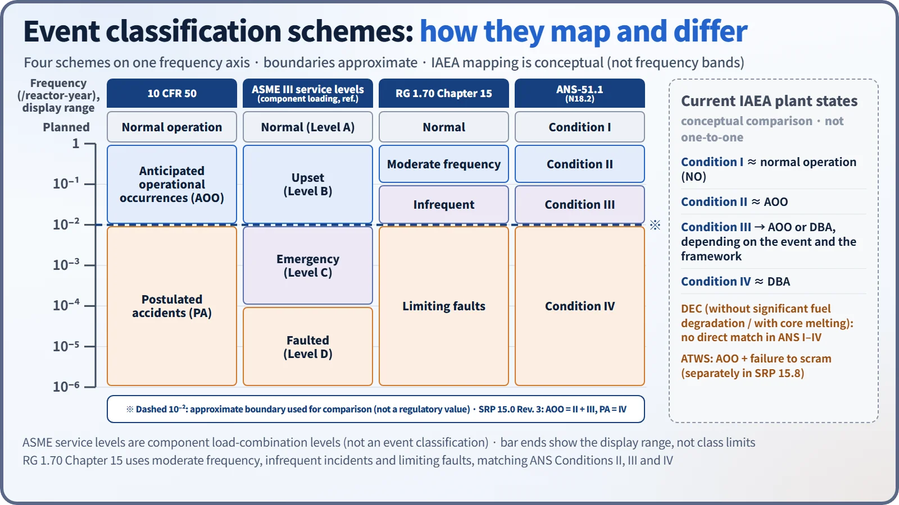
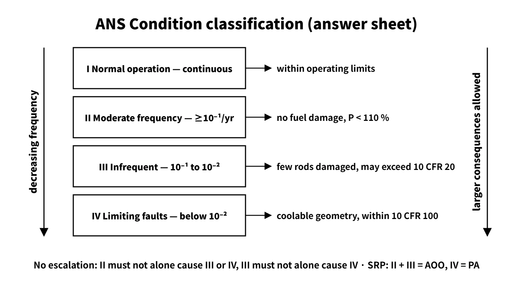

Accidents, Safety Analysis & Severe Accidents · C-SA-025
ANS Condition I–IV Classification — Design-Basis Events by Frequency and Consequence, and Their Acceptance Criteria
The more frequent the event, the stricter the criteria: from Condition II with no fuel damage to Condition IV with coolable geometry and 10 CFR 100 doses.
The ANS classification divides the design-basis events of a nuclear plant, by expected frequency and radiological consequence, into Condition I (normal operation and operational transients), II (incidents of moderate frequency), III (infrequent incidents) and IV (limiting faults), and applies stricter acceptance criteria the more frequent the event (ANSI N18.2-1973 → ANS-51.1-1983).
This entry covers the classification scheme and the acceptance criteria for each Condition.
Principle and mechanism
The principle — even out the risk
SRP 15.0 treats risk as "frequency × consequence" and explains that the design should make the risk of AOOs and of postulated accidents roughly comparable. Frequent events are allowed almost no consequences; rare events are allowed larger ones. As the Condition number rises, frequency falls and the allowed consequences grow.
| Condition | Name | Frequency (qualitative) | Approximate value (/reactor-year) | Typical events (usual W and CE FSAR classification) |
|---|---|---|---|---|
| I | Normal operation and operational transients | Continuous, planned operation | — | Startup and shutdown, refuelling, deviations within the T/S, load changes |
| II | Incidents of moderate frequency | May occur during a calendar year | ≥ 10⁻¹ | Uncontrolled bank withdrawal, boron dilution, turbine trip, loss of condenser vacuum, loss of normal feedwater or off-site power |
| III | Infrequent incidents | May occur infrequently during plant life | 10⁻¹ to 10⁻² | Small LOCA, small secondary pipe break, fuel assembly misloading, complete loss of forced flow |
| IV | Limiting faults | Not expected to occur, but postulated | 10⁻² to 10⁻⁶ | Large LOCA, large MSLB or feedwater line break, RCP locked rotor, rod ejection, fuel handling accident |
The original definitions in N18.2 are qualitative. The numbers come from a South Korean designer's paper (KNS 2014) citing ANS-51.1; they are approximate ranges, not regulatory boundaries.
The MSLB is the classic example of classification depending on size: a large break is IV, a small secondary pipe break is III, and an inadvertent opening of an SG safety valve is II. LOCAs follow the same pattern: large is IV, small is III. SGTR is classified as III or IV depending on reactor type and licensing basis (IV in W-type FSARs).
Acceptance criteria by Condition
SRP 15.0 Rev. 3 (2007), II.2, applies the following to licensees whose licensing basis uses the ANS classification.
| Fuel | Pressure (RCS, main steam) | Off-site dose | No escalation | |
|---|---|---|---|---|
| I | Within LCOs and design limits | Within design conditions | Within normal release limits | — |
| II | No damage: MDNBR ≥ 95/95 limit, no centreline melting (SAFDL) | Below 110 % of design pressure | Within 10 CFR 20; operation can resume after shutdown | Must not by itself cause III or IV |
| III | A small fraction of fuel rods may be damaged | Below 110 % (SRP AOO criterion) | PWR: may exceed 10 CFR 20, but no restriction of public use beyond the exclusion area | Must not by itself cause IV |
| IV | Coolable geometry maintained; rods below the limit assumed failed; LOCA: the five criteria of 50.46(b) | Event-specific allowable design limits considering brittle and ductile failure | Within 10 CFR 100 guidelines | No consequential loss of the systems or containment functions needed to cope |
The no-escalation condition differs by Condition. A Condition II event must not, without another independent failure, cause a III or IV event, and a III must not by itself cause a IV. A Condition IV event must not cause the consequential loss of the system functions needed to cope with it. For example, if a Condition II overpressure transient turns into a LOCA because a pressurizer safety valve sticks open, this principle is violated.

For Condition IV, the pressure limit is set by the event-specific SRP section. The 120 % (Service Level C) of the former SRP 15.2.8 (feedwater line break) is an example; it is not used as a general rule.
What it means in a plant
Mapping to 10 CFR, the SRP, ASME and the IAEA
10 CFR 50 Appendix A defines AOOs as "conditions of normal operation which are expected to occur one or more times during the life of the nuclear power unit", with turbine-generator trip, isolation of the main condenser and loss of all off-site power as examples. SRP 15.0 Rev. 3 states AOO = Condition II + III and postulated accident (PA) = Condition IV. New applications are reviewed under the two categories AOO and PA, while existing licensees licensed under the ANS classification may keep using their previous criteria. The ANS standards were withdrawn in 1998, so the SRP calls them "unofficial ANS standards".

The ASME III service levels (A Normal, B Upset, C Emergency, D Faulted) are load-combination levels for components; they appear in the exam table because their frequency bands overlap. IAEA SSR-2/1 Rev. 1 (2016) divides plant states into operational states (NO, AOO) and accident conditions (DBA, DEC). Condition II corresponds to AOO, but where Condition III sits depends on the framework. The SRP groups III with AOOs, yet a small LOCA is also part of the 50.46 LOCA spectrum analysis and is treated like a DBA in practice. Condition IV corresponds to DBA, and DEC (multiple failures, core melt) lies outside the ANS classification. ATWS, "an AOO plus failure to scram", is beyond the design basis, so it is not Condition IV; it is treated separately in SRP 15.8.
Application in South Korea
- Legal terms: the Korean technical standard rule ("Rule on Technical Standards for Reactor Facilities", NSSC Rule No. 37, 30 March 2026), Article 2(1) items 6, 7 and 9, defines normal operation, anticipated operational occurrence and design-basis accident. Article 17(1) requires margins so that the specified acceptable fuel design limits (item 10) are not exceeded in normal operation and AOOs. Article 42 requires design-basis accident doses to be kept below the NSSC criteria and evaluated deterministically and conservatively.
- SAR Chapter 15: OPR1000 and APR1400 non-LOCA analyses use three categories, moderate frequency (MF), infrequent (IF) and limiting faults (LF), which correspond to ANS II, III and IV.
- Dose criteria: design-basis accidents use the effective-dose criteria of NSSC Notice No. 2026-7 (site restriction): 250 mSv over 2 hours at the exclusion area boundary (EAB) and 250 mSv at the low population zone (LPZ).
Example — loss of condenser vacuum is Condition II
Loss of condenser vacuum is event 15.2.3 in an RG 1.70-format SAR and an AOO in the SRP 15.2.1–15.2.5 group. The South Korean standard plant SAR classifies it as moderate frequency (Condition II). Low vacuum trips the turbine, the condenser interlock blocks steam dump, and depending on the design the main feedwater pumps also trip. Secondary heat removal drops sharply, RCS temperature and pressure rise, and the reactor trips. Heat is then discharged through the main steam safety valves and atmospheric dump valves, and auxiliary feedwater restores the SG levels. Even if the pressurizer safety valves open, the discharge goes to the relief tank inside containment. The criteria are pressure below 110 % and MDNBR ≥ the limit; there is no fuel damage and the effect on containment is negligible.
Fuel rod design criteria in Conditions I and II
Because no fuel rod failure is allowed in Conditions I and II, every SAFDL item must be met: MDNBR, no centreline melting, cladding strain and fatigue, internal pressure and so on. From Condition III onward a small number of failures is allowed, and that number is carried into the dose analysis.
Regulatory basis
| Basis | Key point |
|---|---|
| ANSI N18.2-1973 → ANS-51.1-1983 (R1988) | Definition of Conditions I–IV; the 1983 edition subdivides into PC-1 to PC-5; withdrawn 1998 |
| NUREG-0800 SRP 15.0 Rev. 3 (March 2007) | AOO = II + III, PA = IV; II.2 acceptance criteria; ATWS in 15.8 |
| 10 CFR 50 Appendix A (definitions, GDC 10, 15, 20) | AOO definition; SAFDLs and RCPB design conditions not exceeded in AOOs |
| 10 CFR 50.46(b), 10 CFR 100 (now 50.67) | Five LOCA criteria; off-site dose for postulated accidents |
| RG 1.70 Rev. 3 (1978), Chapter 15 | Moderate frequency, infrequent incidents, limiting faults; sections by event type |
| Korean technical standard rule, Article 2(1) items 6, 7, 9 and 10, Article 17, Article 42 | South Korean definitions, SAFDL margin, DBA dose |
| NSSC Notice No. 2026-7 | EAB 2 h and LPZ 250 mSv (effective dose) |
What has changed since the questions were set
- The 2001 (65th) and 2013 questions used "ANSI N18.2", while the 2015 and 2017 questions use "ANSI/ANS-51.1". They are the same lineage, and the standard was withdrawn in 1998.
- SRP 15.0 moved to the two categories AOO and PA in Rev. 3 (2007), and the IAEA formalized DEC in 2012 and 2016.
- South Korea's site-restriction dose changed with the notice enacted on 20 January 2026 from whole body 250 mSv and thyroid 3 Sv to a single effective-dose criterion of 250 mSv.
Easily confused pairs
| ANS Condition | 10 CFR / SRP | ASME service level | IAEA plant states | |
|---|---|---|---|---|
| Basis | Frequency + consequence | Frequency (expected during life or not) | Component load combination | Frequency + consequence + design scope |
| Categories | I, II, III, IV | Normal, AOO, PA | A, B, C, D | NO, AOO, DBA, DEC |
| Where III sits | Infrequent incidents | AOO | Mostly B to C | AOO or DBA, by event |
| Beyond design basis | Not covered | ATWS (15.8), SBO separately | — | DEC |
Nor is there a one-to-one match with the levels of defence in depth: II is level 2, IV is level 3, and III spans levels 2 and 3 depending on the framework.
Key points at a glance
- Definition: design-basis events in four classes by frequency and consequence; the more frequent, the stricter the criteria (N18.2-1973 → ANS-51.1-1983).
- I Normal operation and operational transients: startup, shutdown, load changes; within operating limits.
- II Moderate frequency (≥ 10⁻¹/yr): turbine trip, loss of condenser vacuum and others — no fuel damage, pressure < 110 %, operation can resume.
- III Infrequent (10⁻¹ to 10⁻²): small LOCA and others — a small fraction of fuel damage allowed, may exceed 10 CFR 20.
- IV Limiting faults (< 10⁻²): large LOCA, MSLB, rod ejection — coolable geometry, within 10 CFR 100.
- No escalation: II must not alone cause III or IV, III must not alone cause IV, IV must not cause consequential loss of mitigating systems.
- Mapping: SRP 15.0 Rev. 3 AOO = II + III, PA = IV / IAEA NO, AOO, DBA, DEC.
- South Korea: SAR Chapter 15 MF, IF, LF; technical standard rule Article 2 items 7 and 9, Article 42; EAB 250 mSv.

This is a model answer, not an official solution. It reflects the criteria current as of 2026.
Exam relevance
The ANS classification has appeared five times in the Korean Professional Engineer (Nuclear Power) exam: 65th exam (2001), session 3, Q5 (fill in the blanks of a table of accident classifications by frequency); 2013 exam, session 1, Q8 (types of ANSI N18.2 Condition IV accidents); 2015 exam, session 4, Q5 (maintaining condenser vacuum, and the Condition and behaviour of a loss-of-vacuum event); 2016 exam, session 1, Q3 (anticipated operational occurrences); and 2017 exam, session 3, Q4 (fuel rod design criteria in ANS Conditions I and II). The typical question types are the four-class definition with examples, the acceptance criteria for a given Condition, classifying a specific event, and mapping between frameworks. The table in the 65th exam question was a figure missing from the normalized text, so it was restored from the original paper: a frequency axis from 10⁻¹ to 10⁻⁶ per reactor-year and four columns (10 CFR / RG 1.48 and ASME Code / RG 1.70 Rev. 2 and 3 / ANS 51.1 (N18.2)) with twelve blanks A–L; the answers are in fig2.